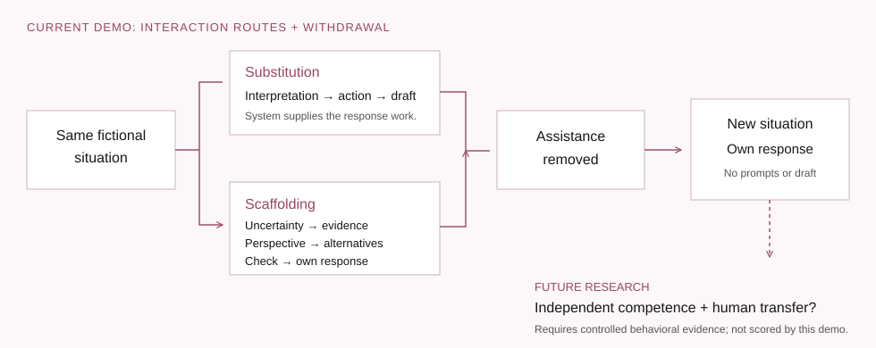
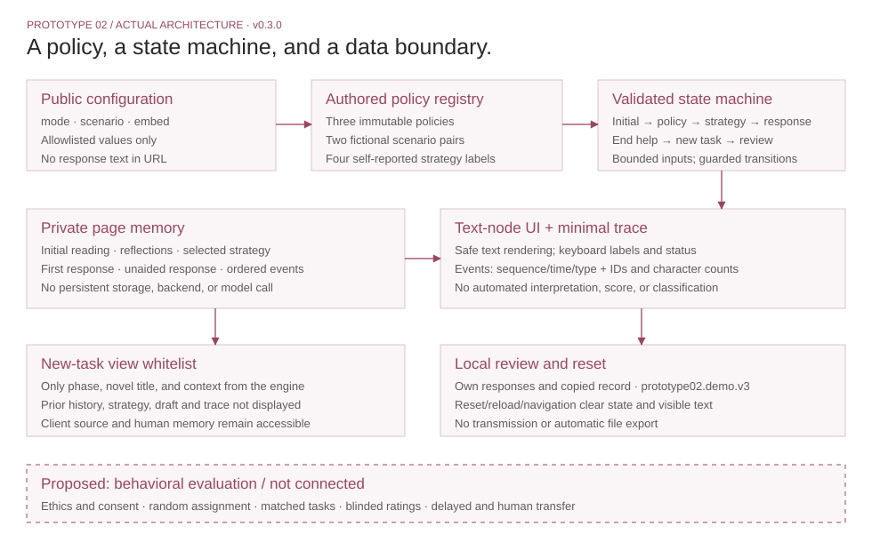
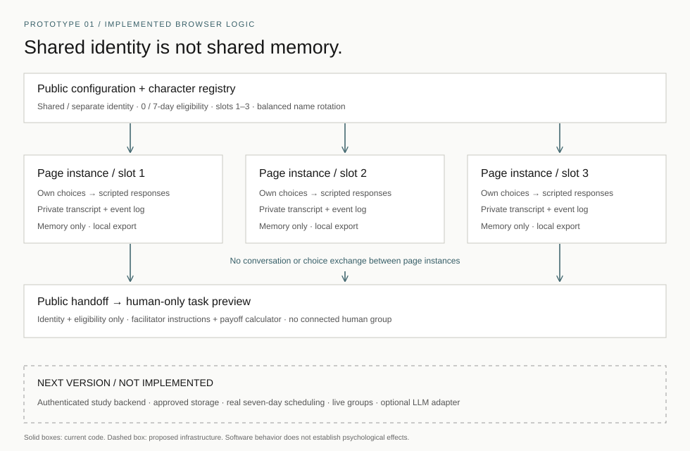

Research + Invention · Psychology × Interactive Systems
Xuechu Zhang
When AI gets better at helping us communicate, do we become better communicators?
I study how artificial social actors reshape human judgment, relationships, and communities—and build systems to test when AI scaffolds human capacities versus substitutes for them.
What if the best AI made itself less necessary over time?
Two working, scripted prototypes. Human effects remain questions to test.
01 / Observe · Empirical foundation
AI-Assisted Interpersonal Communication
A more sincere-feeling expression can coexist with a weaker sense of ownership.
Collaborative project with Professor Angel Hsing-Chi Hwang at USC · Analysis ongoing · Manuscript in preparation
Question
AI can help with conflict, apology, and difficult self-expression. Improved assisted communication does not automatically show that the person has developed independent competence.
Contribution
I lead theoretical framing and mixed-methods analysis, develop conversational coding frameworks, and integrate chatbot logs, interviews, open-ended responses, and pre–post measures.
Method
Two pilots and a main study follow a pre-survey → chatbot interaction → post-survey sequence. Theory-driven coding examines prompting strategies, emotional validation, interpersonal planning, and changes in communication strategy, alongside mixed-effects analyses.
Study design and data collection belong to the collaborative project. My individual contribution centers on framing, coding, analysis, and translating findings into a guide and feedback survey.
- Pilot 1
- N = 55
- Pilot 2
- N = 45
- Main study
- N = 222
Pre-survey → Chatbot interaction → Post-survey
Preliminary self-report pattern
- Perceived sincerity
- Higher
- Willingness to use AI support
- Higher
- Ownership
- Lower
- Perspective-taking
- Lower
These reported directions do not establish improved independent competence, lasting dependence, or a causal loss of agency. No effect sizes or significance claims are displayed.
02 / Build · Scaffolding AI
A policy that returns the work to the person.
Implemented: three modes, an initial reading, strategy selection, own response, withdrawal, and a new unaided task.
Human learning untested.
When the helper leaves, what can the person do?
Direct AI / scripted answer-supply
Interpret → Recommend → Draft
An authored example supplies a reading, action, and language to adapt. It does not respond to your text.
Scaffolding AI / scripted guided-judgment
Evidence before expression.
Five prompts guide uncertainty, evidence, perspective, alternatives, and checking a conclusion. You choose a strategy and author the response.
Independent Reflection / no AI suggestions
Your own reading and response.
The same situation, strategy menu, and response fields remain. No candidate interpretation or draft is supplied.

Open the implemented architecture

- What I built
- A browser research artifact with three inspectable policies, explicit transitions, bounded inputs, strategy selection, a novel task, and a local record.
- How it works
- Policy → validated state → text-node rendering → ordered local events. No model or database is needed to demonstrate the first manipulation.
- Evidence
- Automated software checks and agent-operated browser walkthroughs are documented separately from human usability feedback and experimental evidence.
- What remains
- Match exposure and effort, pilot stimuli, develop reliable blinded ratings, and test human learning and interpersonal transfer.
Research framing follows my ongoing interpersonal-communication work. Implementation developed with Codex assistance; this is not presented as prior independent engineering or a validated USC intervention.
03 / Scale · Shared artificial social actor
One artificial identity. Separate human experiences.
Can private relationships with the same artificial social actor create shared social reality among people who have never met?
Building on the lab’s paradigm with Dr. Chen Zhou at Glasgow, my temporal extension asks what changes when people first meet one week after their private AI interactions. The proposed experiment compares shared and separate characters at immediate and seven-day-delayed first human meetings.
Private encounters
Trust? Shared language? Group identity?
Social norms? Human coordination?
Proposed human outcomes; none established by the demo.
- Implemented
- Shared character identity, separate page state, choice-based responses, ordered events, and a metadata-only handoff.
- Not connected yet
- Live groups, authenticated private memory, cross-user state, and real follow-up scheduling.
“Scale” names the next scientific question, not deployed multi-user infrastructure. No human cooperation or seven-day effect is established by this demo.
Prototype 01 / 42-second interface walkthrough
Implemented architecture and privacy boundaries


04 / Future direction · From individuals to communities
From a better message to a different social world.
How do artificial social actors reshape human judgment, relationships, and collective life—and which human capacities should remain human?
01
Scaffolding vs. Substitution
Does AI help people develop their own abilities, or perform the cognitive and interpersonal work on their behalf?
Test the person after assistance is removed.
02
Human–Human Spillover
Do changes that begin in human–AI interaction carry into later communication and relationships with real people?
Test the next human interaction.
- Message
AI participates in expression
- Person
Judgment, voice, and capability
- Relationship
Trust and interpersonal expectations
- Community
Shared norms and coordination
Experiments, conversational data, mixed methods, and longitudinal questions are ways to investigate this shared agenda.
05 / Supporting empirical foundations
Learning how to measure—and what to infer.
These projects strengthen my approach to evidence. Each retains its own research question.
Inferring Intent from Incomplete Signals
Research support in Professor Rachael Jack’s Glasgow lab: facial, vocal, and text-derived signals, reaction time, facial EMG, and reproducible R workflows.
Gaming Disorder: What Does an Average Effect Hide?
Work with Professor Cecilia Cheng’s CARE Lab at HKU: approximately 400 meta-analyses screened and 69 eligible. Heterogeneity and study design shape the claims an average can support.
06 / Public translation & community
From research to something people can use.
Research → Translation → Deployment → Learning
A guide and feedback survey, Chinese-language peer resources, and public communication. Reach measures describe exposure; they do not establish better judgment or wellbeing.
- Xiaohongshu: Study-Abroad Peer Information
- 1M+
- Anti-Bullying Project · 2022–2023
- 100k+
cumulative content views · Self-reported in CV
Not unique viewers, participants, or evaluated wellbeing outcomes.
cumulative public video views · Self-reported in CV
Views are exposure, not evidence that bullying decreased.
07 / Manuscripts & academic background
The work behind the questions.
- In preparation · ICA Annual Conference intendedAI-Assisted Interpersonal Communication and the Trade-Off Between Sincerity and Ownership
- In preparationFrom private AI relationships to shared social reality: How artificial social actors shape subsequent human–human interaction
- Under review · Nature Human BehaviourGaming disorder prevalence, psychosocial correlates, and intervention outcomes: an umbrella review of meta-analyses